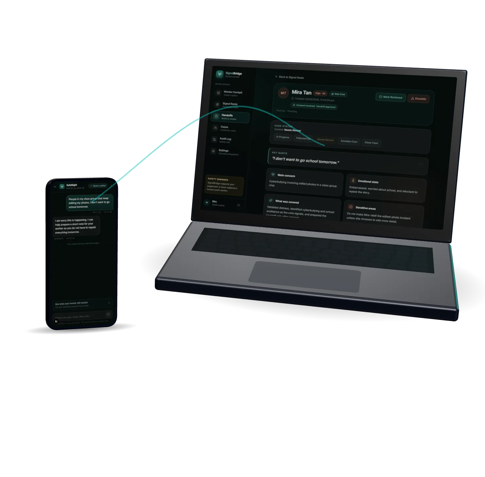
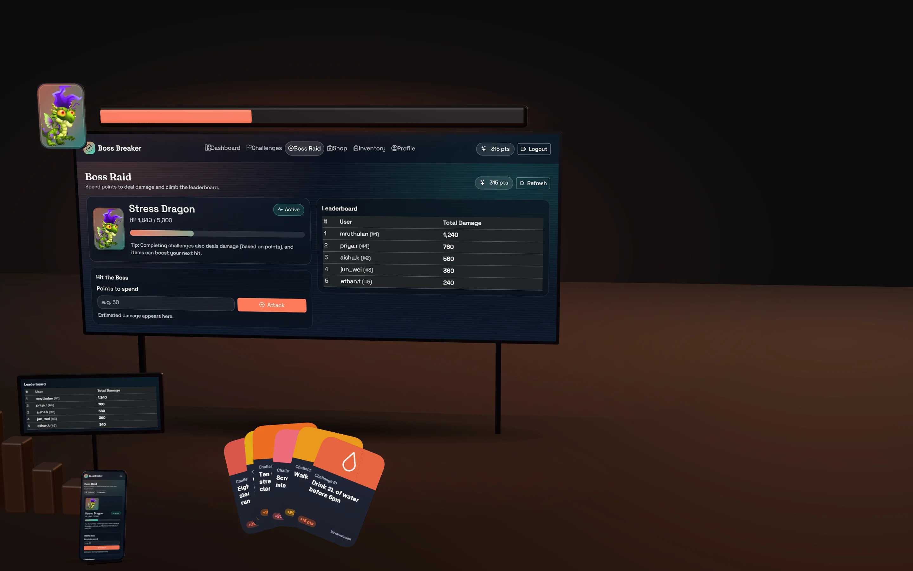
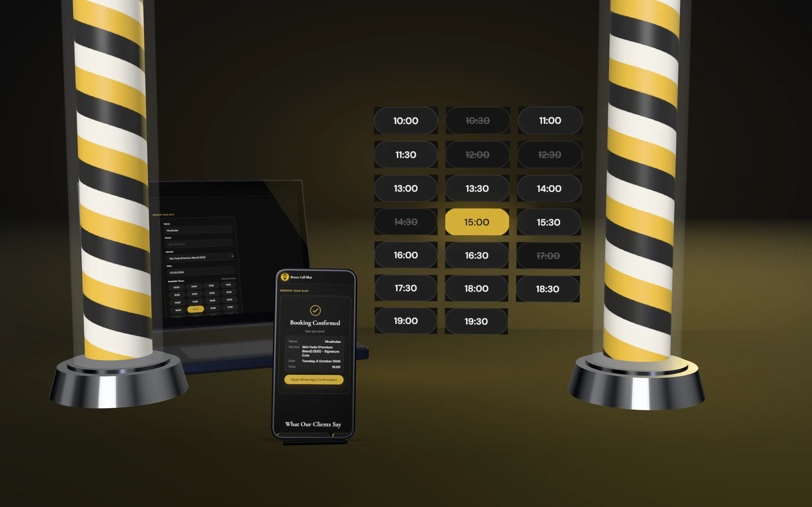
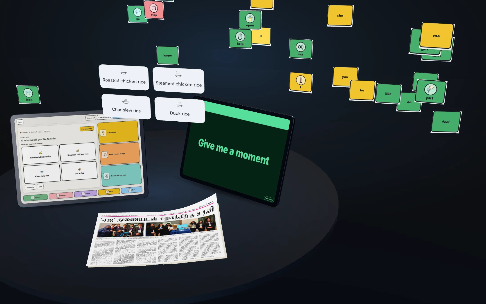
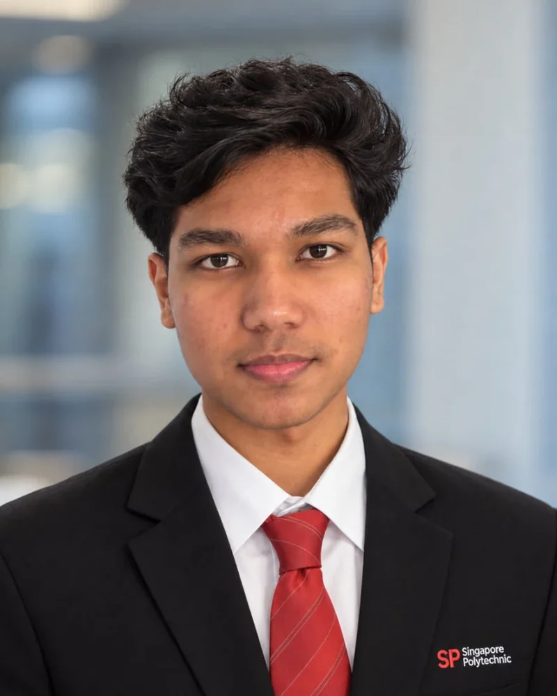
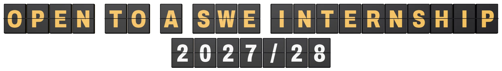

Champion
Dell InnovateDash 2026

01
After-hours chat for young people. Nothing reaches a youth worker until they say yes.
Champion · Dell InnovateDash 2026
More info

03
Online booking for a barbershop in Singapore.
Solo build · in a pilot with the shop
More info
04
Helps people who can’t rely on their speech reply in time. They choose every word.
2nd runner-up · Dell InnovateFest 2026
More info Featured in Tamil MurasuDell InnovateDash 2026
Dell InnovateFest 2026 · polytechnic category S$3,000
Autodesk Singapore Hackathon 2026

I build for one real person first: a youth worker at midnight, someone who can’t rely on their speech, a barber with a full day of bookings.

mruthulansenthilnathan@gmail.com